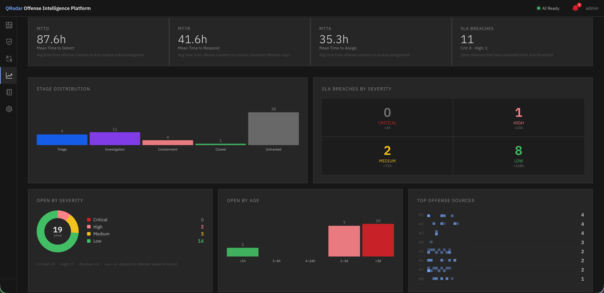
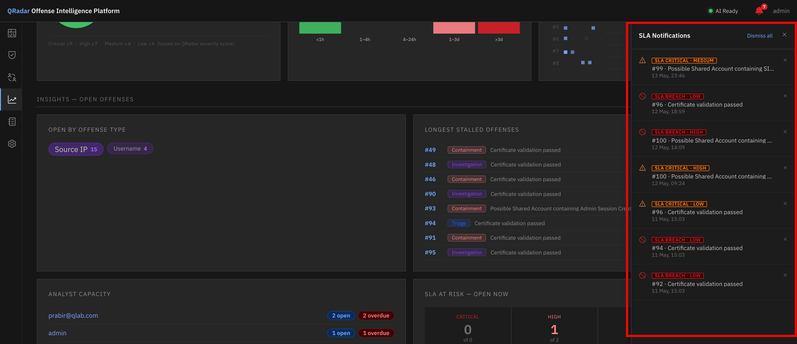

Analytics & SLA¶
Overview¶
The Analytics dashboard gives SOC managers and team leads visibility into operational performance — how fast the team is detecting and responding, who is carrying what workload, which offenses are at risk of breaching SLA, and where the team is stalling.
Navigate to Analytics in the left navigation bar.

Analytics dashboard — operational metrics, SLA status, and analyst workload at a glance.Metrics¶
MTTD — Mean Time to Detect¶
The average time between when an offense first occurred (QRadar start_time) and when it was first acknowledged or assigned. Measures how quickly threats are being seen.
MTTR — Mean Time to Respond¶
The average time between offense creation and closure. The primary SOC performance metric — lower is better.
MTTA — Mean Time to Acknowledge¶
The average time between offense creation and when an analyst first acts on it (assignment or lifecycle stage change). A high MTTA indicates offenses are sitting in the queue unattended.
All three metrics are displayed as trend charts over a rolling period, allowing managers to see whether response times are improving or degrading.
SLA Monitoring¶
SLA thresholds¶
SLA thresholds define the maximum acceptable time to resolve an offense by severity band. Configure them under Settings → System Settings → SLA Thresholds.
Default thresholds:
| Severity | Default SLA |
|---|---|
| Critical | 4 hours |
| High | 24 hours |
| Medium | 72 hours |
| Low | 7 days |
SLA status per offense¶
Each open offense shows an SLA indicator with: - Time remaining until SLA breach - Percentage consumed of the SLA budget - At-risk status (orange) when the configured at-risk threshold is reached (default: 80% consumed) - Breached status (red) when 100% is consumed
SLA notifications¶

Bell menu — SLA breach and at-risk notifications with per-notification dismissal.The SLA Breach Checker job (runs daily at 00:00 by default) raises notifications for:
- At-risk — offense has consumed ≥ the configured at-risk threshold % of its SLA
- Breach — offense has consumed 100% of its SLA (is overdue)
Notifications appear in the bell menu (top right of the application). The bell shows a badge count of unread notifications.
Each notification can be dismissed individually with a dismissal reason. Dismissed notifications are retained for the configured retention period (default: 7 days) before being purged.
Dashboard Panels¶
Severity Breakdown¶
Pie/donut chart showing the distribution of open offenses by severity band (Critical, High, Medium, Low). A quick check on the overall health of the queue.
14-Day Severity Trend¶
Line chart showing daily offense volume by severity over the past 14 days. Use this to identify whether offense volume is growing, stable, or declining across severity bands.
Analyst Workload¶
Bar chart showing the number of open offenses assigned to each analyst. Use this to identify overloaded analysts and redistribute work.
Top Attack Sources¶
Ranked list of the most active attacker sources (offense_source values) by number of offenses in the past 30 days. An IP appearing repeatedly here may warrant blocking or escalation.
Stalled Cases¶
List of offenses that have not had a lifecycle stage change in longer than a configurable period. These are investigations that have stopped progressing — either blocked, forgotten, or waiting for action.
Analyst Capacity¶
Shows the ratio of open high/critical severity offenses per analyst, helping identify when the team needs additional resources.
Age Distribution¶
Distribution of open offenses by how long they have been open (e.g. < 1 day, 1–7 days, 7–30 days, > 30 days). A large proportion in the older buckets indicates a backlog.
Offense Type Breakdown¶
Distribution of offenses by QRadar offense type. Useful for identifying which offense categories dominate the queue.
SLA Configuration¶
Thresholds¶
Configure SLA thresholds by severity under Settings → System Settings → SLA Thresholds. Values are entered in hours and minutes.
At-risk threshold¶
The At-risk threshold (%) controls when the orange at-risk notification fires. Default is 80% — meaning when an offense has consumed 80% of its SLA budget, it becomes at-risk. Set this lower (e.g. 60%) for more lead time, or higher (e.g. 90%) to reduce notification noise.
Notification retention¶
Dismissed SLA notifications are retained for the configured retention period before being auto-purged. Default is 7 days. Adjust under Settings → System Settings → SLA Notifications.